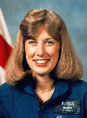

Lyndon B. Johnson Space Center
Houston, Texas 77058
|
National Aeronautics and Space Administration Lyndon B. Johnson Space Center Houston, Texas 77058 |
 |
Biographical Data |
||
N. Jan Davis (Ph.D.)
NASA astronaut (FORMER)
PERSONAL DATA: Born November 1, 1953, at Cocoa Beach, Florida, but considers Huntsville Alabama, to be her hometown. She enjoys flying, ice skating, snow skiing, water sports, and needlework.
EDUCATION: Graduated from Huntsville High School in 1971; received bachelor of science degrees in applied biology from Georgia Institute of Technology and in mechanical engineering from Auburn University in 1975 and 1977, respectively; received a master of science degree and a doctorate in mechanical engineering from University of Alabama in Huntsville, in 1983 and 1985, respectively.
ORGANIZATIONS: Fellow, American Society of Mechanical Engineers (ASME). Member, Tau Beta Pi, Omicron Delta Kappa, Pi Tau Sigma, and Sigma Gamma Tau honoraries, and Alpha Xi Delta social sorority.
SPECIAL HONORS: Presidential Rank of Meritorious Executive (2002), NASA Space Flight Awareness Leadership Award (2005), NASA Outstanding Leadership Medal (1998), NASA Exceptional Service Medal (1995,2002), NASA Space Flight Medal (1992, 1994, 1997), NASA Fellowship for Full-Time Study (1983), ASME National Old Guard Prize (1978), ASME Ralph Coates Roe Medal (2001), Alabama Aviation Hall of Fame, and Alabama Engineering Hall of Fame.
EXPERIENCE: After graduating from Auburn University in 1977, Dr. Davis joined Texaco in Bellaire, Texas, working as a petroleum engineer in tertiary oil recovery. She left there in 1979 to work for NASA’s Marshall Space Flight Center as an aerospace engineer. In 1986, she was named as team leader in the Structural Analysis Division, and her team was responsible for the structural analysis and verification of the Hubble Space Telescope (HST), the HST maintenance mission, and the Advanced X-Ray Astrophysics Facility. In 1987, she was also assigned to be the lead engineer for the redesign of the solid rocket booster external tank attach ring. Dr. Davis did her graduate research at the University of Alabama in Huntsville, studying the long-term strength of pressure vessels due to the viscoelastic characteristics of filament-wound composites. She holds one patent, has authored several technical papers, and is a Registered Professional Engineer.
Dr. Davis became an astronaut in June 1987. Her initial technical assignment was in the Astronaut Office Mission Development Branch, where she provided technical support for Shuttle payloads. She then served as a CAPCOM in Mission Control communicating with Shuttle crews for seven missions. After her first space flight, Dr. Davis served as the Astronaut Office representative for the Remote Manipulator System (RMS), with responsibility for RMS operations, training, and payloads. After her second space flight, she served as the Chairperson of the NASA Education Working Group and as Chief for the Payloads Branch, which provided Astronaut Office support for all Shuttle and Space Station payloads. A veteran of three space flights, Dr. Davis has logged over 673 hours in space. She flew as a mission specialist on STS-47 in 1992 and STS-60 in 1994, and was the payload commander on STS-85 in 1997.
After her flight on STS-85, Dr. Davis was assigned to NASA Headquarters as the Director of the Human Exploration and Development of Space (HEDS), Independent Assurance Office for the Office of Safety and Mission Assurance. In July 1999, she transferred to MSFC as Director of the Flight Projects Directorate with responsibility for the International Space Station (ISS) Payload Operations Center, ISS Nodes 2 and 3, ISS Multi-purpose Logistics Modules, ISS Regenerative Environment Control and Life Support System, and the Chandra X-Ray Observatory Program. In August 2003, she was named Director of Safety and Mission Assurance, with responsibility for the safety, reliability, and quality activities of all MSFC projects and personnel. In October 2005, Dr. Davis retired from NASA and currently works for Jacobs Sverdrup Engineering, Science, and Technical Services contract at MSFC.
SPACE FLIGHT EXPERIENCE: STS-47, Spacelab-J, was the 50th Space Shuttle mission. Launched on September 12, 1992, this cooperative venture between the United States and Japan, conducted 43 experiments in life sciences and materials processing. During the eight-day mission, she was responsible for operating Spacelab and its subsystems and performing a variety of experiments. After completing 126 orbits of the Earth, STS-47 Endeavour landed at Kennedy Space Center on September 20, 1992.
STS-60 was the second flight of Spacehab (Space Habitation Module) and the first flight of the Wake Shield Facility (WSF). Launched on February 3, 1994, this flight was the first Space Shuttle flight on which a Russian Cosmonaut was a crew member. During the eight-day mission, her prime responsibility was to maneuver the WSF on the RMS, to conduct thin film crystal growth and she was also responsible for performing scientific experiments in the Spacehab. The STS-60 Discovery landed at Kennedy Space Center on February 11, 1994, after completing 130 orbits of the Earth.
Dr. Davis was the payload commander for STS-85, which was launched on Discovery on August 7, 1997. During this 12-day mission, Dr. Davis deployed and retrieved the CRISTA-SPAS payload, and operated the Japanese Manipulator Flight Demonstration (MFD) robotic arm. The mission also included several other scientific payloads for the conduct of research on astronomy, Earth sciences, life sciences, and materials science. The mission was accomplished in 189 Earth orbits, traveling 4.7 million miles. The STS-85 Discovery landed at Kennedy Space Center on August 19, 1997.
JANUARY 2006